Next week we will learn to use likelihoods of models given the data as the basis for drawing scientific conclusions, using the method of support. To prepare you to use this new approach we will spend this week working with likelihoods to better understand how they are calculated, how to interpret them, and what they can tell us about support for models. The examples we use today make use of things you already know how to do in R, like calculating a mean and fitting a regression line to some data, but we will learn how to interpret those now familiar skills in the context of maximum likelihood estimation.
Maximum likelihood estimation is, as the name implies, an estimation method. Maximum likelihood is an alternative to least squares, which finds estimates of group means and best-fit lines that minimize the squared residuals around the estimates. Maximum likelihood is similar, in that it too is a way of finding estimates that are the best possible by some criterion, but maximum likelihood estimates are those that have the highest likelihood given the data.
What, then, is a likelihood? So glad you asked.
Likelihood functions and probability distributions
Go ahead and start a new project in R Studio called "likelihood", and download this Rmd file and this Excel spreadsheet file into it. We won't need to import the Excel data quite yet, the instructions will let you know when it's time to do so, but you'll start having some questions to answer in the Rmd file shortly.
A good place to start understanding likelihood is by reviewing probability distributions. If you recall, a probability distribution gives all possible values of a variable and their probabilities of occurring. Probability distributions for outcomes that can only take particular values are called discrete probability distribution. Counts are a common example of discrete data, and a discrete probability distribution that is often used as a model for counts is the Poisson distribution.
For example, consider counts of white blood cells (WBC) on blood smears, like the one on the left (white blood cells are nucleated, so they're easy to see by staining for DNA - you can see clearly in this image that there are two of them visible). The numbers possible are any count from 0 up to the number of cells that can fit on a slide - not infinite, but a large number.
If the WBC on a slide are independent of one another (and if the patients are independent as well) then we can expect the probability of getting any particular number of WBC on a slide (x) given a mean count of λ to be:
A Poisson distribution has only one parameter, λ, which is both the mean count and the variance in counts (which is to say, the mean equals the variance for the Poisson distribution, so only one parameter is needed to represent both).
We need to know what λ is to calculate the probability of a WBC count, but how do we know λ? If we have a sample of data we can estimate λ by taking the mean of the counts - across 100 blood smears we might find that the mean number of WBCs is λ = 2.3. Calculating the probability a blood smear will not have any WBC on it would then be a matter of plugging in 2.3 in place of λ and 0 in place of x to get:
The probability notation, P(x = 0| λ = 2.3), says "the probability that x = 0 given that λ = 2.3", where the vertical line means "given" - anything to the right of the line is treated as a known value, so it is only x = 0 that is treated as unknown and in need of a probability calculation. When you express probabilities this way they are conditional probabilities - the "given" is the condition that has to be true for the probability to be accurate.
If the ! doesn't look familiar that is the factorial operator, which says "multiply this value with all the integer numbers less than it is down to 1". This example calculation includes the one oddball case - 0! is defined as 1, even though anything multiplied by 0 is 0.
Since this is a discrete probability distribution we can calculate the probability of any of the possible counts we could observe (x = 1, x = 2, etc.), but we have to do this calculation for each one - plugging in counts from 0 to 10 for x give us:
| Count | Poisson probability |
|---|---|
| 0 | = 0.1003 |
| 1 | = 0.2306 |
| 2 | = 0.2652 |
| 3 | = 0.2033 |
| 4 | = 0.1169 |
| 5 | = 0.0538 |
| 6 | = 0.0206 |
| 7 | = 0.0068 |
| 8 | = 0.0019 |
| 9 | = 0.0005 |
| 10 | = 0.0001 |
| Over 10 | < 1x10-16 |
outcomes are discrete - the spaces between the bars emphasize that decimal values can't occur.
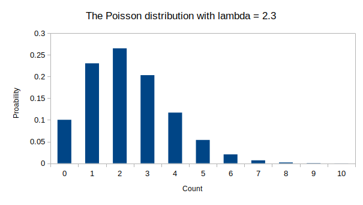
Counts can go up to positive infinity, but you can see on the graph that the probability becomes very small above 10 WBC when the mean is 2.3 - by the time we've calculated the probability of 10 WBC for this Poisson distribution the sum of the probabilities is so close to 1 that lumping all the rest of the possible counts into an "over 10" group collectively and calculating the probability of this infinite number of counts over 10 still only has a probability less than 1x10-16. This means that we can pretty much ignore values over 10 without losing much precision in our calculations when the mean is 2.3 (and, it justifies using the Poisson distribution even though we know that it isn't possible to have an infinite number of WBC on a slide in reality).
The fact that the sum of the probabilities of all of the possible outcomes is equal to 1 is an important part of the definition of a probability distribution - probability distributions give probabilities for every possible outcome for a variable, and it makes sense that the sum of the probabilities of every one of the outcomes that are possible has to be equal to 1.
Discrete probabilities can be interpreted as the chance that something will happen if we conduct a single trial - in this case a trial would be drawing a blood sample, making a smear, and counting WBC on it. Before we do the count all we can know about how many WBC will be on the slide is that a randomly selected smear has a probability of 0.1003, or a 10.03% chance, of having no WBC, a 23.06% chance of having one WBC, and so on.
We can also interpret the probabilities as the proportion of slides we can expect will have 0, 1, 2, 3, etc. WBC in a sample of many slides. If we observe 10,000 slides we expect 1,003 of them to have no WBC, 2,306 of them to have 1 WBC, 2,652 of them to have 2 WBC, and so on. Interpreting the proportions as percentages, we expect 10.03% to have 0 WBC, 23.06% to have 1 WBC... you get the idea.
The key point about the Poisson probability distribution, though, is this: all of these calculations treat the mean, λ, as a known value that we use to calculate probabilities of outcomes, which are treated as unknown values.
The Poisson likelihood function
Likelihoods are about the values of unknown parameters given the known data. This reverses what we treat as known and unknown, so to "convert" the Poisson probability distribution into a Poisson likelihood function we just need to change the notation on the left side of the equation:
This is seemingly a minor change since the calculation we do will be exactly the same, but it fundamentally changes what the function is doing.
I'm going to ask you to do a lot of re-thinking, so let's start with the part of this that is the most intuitively satisfying: treating λ as unknown and the data as known should make sense to you, because... we know what the data are, right? It's the only thing we actually do know - to use this function as a probability distribution we had to estimate the parameter from data, which is typical because we almost never actually know what its value really is. When we use a probability distribution using an estimate of a parameter the "given" is more correctly interpreted as "if we assume that λ is 2.3" rather than "given that we know that λ is 2.3". Compared to that, the likelihood version of the equation is a more natural fit to the situation we actually find ourselves in when we're analyzing data.
So, now that we've acknowledged we don't know what λ is, but we can use likelihood to estimate it. To do this, we can try out different values for λ and see which one has the highest likelihood given the data. We'll consider whatever value of λ has the highest likelihood to be the maximum likelihood estimate of λ.
If we took a blood sample, made a smear, and counted 3 WBC on it we can calculate the likelihood of a possible value for λ given this data value by plugging in 3 for x, and our guess for the value of λ for λ. It seems reasonable to think that if we got a count of 3 that the mean might also be 3, so we can plug in 3 for both x and for λ like so:
The likelihood that the mean, λ, is equal to 3 when we have one count of 3 is 0.224, which tells us... nothing, really. Unlike probabilities, likelihoods don't have interpretations as single values, so that value of 0.224 doesn't tell us anything by itself. To interpret a likelihood we need likelihoods of other possible values for λ to compare with, so as our next possible value of λ let's pick 2. If we plug in 3 for x again (since it's the known data value still), and this time plug in 2 for λ we get:
The likelihood of λ = 2 when we have a data value equal to 3 is lower than the likelihood of λ = 3, so it's less likely that the mean is 2 than 3 when we have a single data value with 3 WBC on it.
There is no reason why the mean has to be a discrete number the way the data values are - we had a mean of 2.3 for a collection of counts when we were considering the Poisson to be a probability distribution after all - so we can try out decimal values too. If we tried a mean of 2.5 we would get:
The likelihood of 2.5 is higher than the likelihood of, but not as high as 3.
We can continue to do these calculations across a range of possible values for λ for our single count of 3 WBC, and this is what we would find:
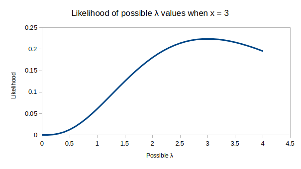
You can see that the possible value of λ with the highest likelihood given that x = 3 is at the observed data value of 3.
If we counted a second slide and found x = 2 white blood cells, the likelihood function for that single count would show us that:
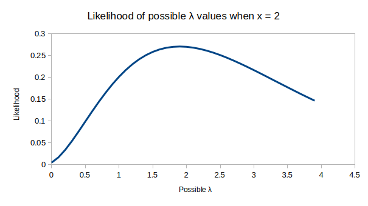
Once again, the likelihood function maximizes at the data value, in this case a value of x = 2.
But, we don't want to be stuck analyzing the data just one data value at a time, we want to use both of our counts together as a data set to estimate the mean given both of them. To do that we just need to multiply the likelihoods for a value of λ given each of the data values together. Think of this as picking a value for λ along the x-axis, getting the height of the curve for x = 2 and the height of the curve for x = 3, and then multiplying those two heights together, and then doing that for every value along the x-axis. The graph showing the likelihoods for each data value and the combination of the two is here:
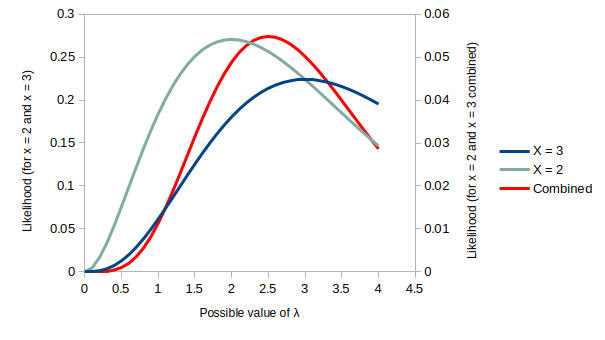
Since multiplying two curves with decimal values for heights produces very small numbers I added a second y-axis that you can read the combined likelihood function against. The y-axis on the left is for the likelihood functions for single data values of either x = 3 or x = 2.
The formula for the likelihood function using both of the data values is just the product of the likelihoods for each one, like so:
This is the same Poisson likelihood, but now we have two data values, so we multiply their likelihoods together (this is what the capital Greek pi tells us - it is the multiplication operator, like Σ is the summation operator).
A couple of things to notice in the graph:
- For single data values the likelihood function maximizes at the
observed data value
- The likelihood function of λ using both of the data values maximizes at 2.5, between the two data values - this is the maximum likelihood estimate for λ given both of the known data values
- Even though the Poisson probability distribution and the Poisson likelihood function are the same formula, the Poisson probability distribution is discrete, but the likelihood function is continuous. This is because the mean of a set of counts can be a decimal number, so the mean isn't constrained to be a discrete integer number like the count data are.
Let's move on to use of likelihoods to solve an unexpectedly difficult problem: getting confidence intervals for proportions.
Likelihood of proportions, and profile likelihood confidence intervals
Proportions are commonly encountered in Biology, and are very simple quantities to calculate. If we had a sample of 20 individuals, of which 15 were heterozygous for a trait we were interested in, we could calculate the proportion that are heterozygous by dividing the number of heterozygotes by the total number observed, or p = 15/20 = 0.75 (don't confuse this for a p-value from a hypothesis test, we are using p to represent the proportion of heterozygotes for this example).
But, as simple and useful as they are, proportions can be tricky to work with. It turns out that something as simple as calculating a 95% confidence interval for a proportion is not at all straightforward.
The usual method of calculating a confidence interval is the Neyman method (named for Jerzy Neyman, the statistician who developed it). For the mean of sample of numeric data, the calculation is:
x̄ ± t sx̄
The t sx̄ part is the "uncertainty", which is calculated as the standard error of x (sx̄) multiplied by a t-value (which is the place on a t-distribution between which 95% of possible values fall). This value of uncertainty is then added to the mean to get the upper limit of the interval, and is subtracted from the mean to get lower limit of the interval.
This works fine for means of normally distributed data, but it can fail with proportions because can't be less than 0 or greater than 1. These values represent a hard "basement" at 0 and a hard "ceiling" at 1. With our value of p = 0.75 there is more room between 0 and 0.75 than there is between 0.75 and 1, so the amount of uncertainty around the estimate is probably also asymmetrical. If we use a method that forces the uncertainty to be symmetrical, then we can easily end up with an upper limit for the confidence interval that is higher than 1, which is an impossible value for a proportion. In general, proportions other than 0.5 should have asymmetrical intervals to account for the fact that they have less space to be wrong in the direction of the nearest hard boundary, and should have a shorter interval width in that direction.
A better solution is to use the likelihood function for proportions to both estimate p, and to obtain confidence intervals for the estimate directly. It can be shown that the two values for p whose likelihoods are 1.92 units below the maximum log likelihood are good estimates for the lower and upper 95% confidence interval (the number 1.92 comes from the Chi-square probability distribution, and is 1/2 the critical value of 3.84 with 1 df - the link between likelihood and the Chi-square distribution is something we'll see again when we do likelihood ratio tests below). A confidence interval produced this way is called a profile likelihood confidence interval.
This isn't as complicated as it sounds, but it helps to see an illustration of it - this app should help clarify the concept.
Work through the instructions in the tabs below to answer the questions about confidence intervals for a proportion in your Rmd file.
The likelihood function for a proportion has a simple formula - it's pn(1-p)K-n, where p is the proportion of heterozygotes, n is the number of heterozygotes, (1-p) is the proportion of homozygotes (i.e. not heterozygotes), and K - n is the number of homozygotes (K is the total individuals, n is the number of heterozygotes, so K - n is the number of homozygotes). The likelihood function for a range of possible values of p is shown in the graph on the right, titled "Likelihood function of dataset".
The app is initially set to 15 heterozygotes out of 20, which is a proportion of 0.75. The current estimate for the value of p is selected by the slider, which begins at 0.5.
Proportions can be thought of as the balancing point for count data - the graph on the left shows the data as bars for homozygotes and heterozygotes, and you can think of the x-axis as a teeter-totter they are balancing on. The current value of 0.5 is in the middle, which isn't the right place to balance the bars - the greater number of heterozygotes are weighing down the right side and making the graph tilt. If you move the slider to the right you'll see that you get the graph balanced at p = 0.75. The maximum likelihood estimate for the proportion is also at this point, as you can see in the graph on the right.
With the slider set at 0.75 change the type of likelihood to log likelihood. You'll see that the log likelihood has a much flatter top than the likelihood did, but its maximum is still at the same value of p.
If you drop down the likelihood function selector again, and select "negative log likelihood", the curve will flip over and face upward, but will have the same shape as the negative log-likelihood.
Now, if you select "Negative log likelihood with profile 95% CI", the minimum of the -log likelihood has been subtracted from every value, which causes the function to touch the x-axis at the estimate. A horizontal line is placed at 1.92, and the two places where it touches the likelihood function are the lower and upper limits of the 95% CI. The curve looks very different, but it's just because of the difference in y-axis scaling, it's the same likelihood function you've been looking at.
If you hover over the curve at the two points of intersection you'll see a popup that indicates the value of p at those two points. Record these in your Rmd file.
We can see how things change as we make the number of heterozygotes more rare.
Change the number of heterozygotes to 4, keeping the total at 20, which is a p of 4/20 = 0.2. Set the slider to 0.2, and confirm you're at the maximum likelihood estimate. Then, get the lower and upper limits from the likelihood function graph. Report these in your Rmd file.
Any method of estimating confidence intervals worth its salt should get narrower the more data we collect. This would clearly be true with the Wald standard error-based method, since N is in the denominator of the standard error calculation. It's not as obvious what larger sample sizes would do to the shape of the likelihood functions, so let's see.
Set the total to 100 and the number of heterozygotes to 20 - this gives us the same p of 20/100 = 0.2 as we got with 4 heterozygotes out of 20, but the sample size is bigger now. You should see that the likelihood function is much more steeply sloped around the estimate now, which brings the upper and lower limits closer to the estimated value. Thus, increasing sample size does indeed make the 95% CI smaller. Report the confidence interval for this larger sample size in your Rmd file.
Profile likelihood confidence intervals work with any likelihood function, but it's particularly useful for things like proportions that work poorly using symmetrical confidence intervals. It's not really needed when we're working with normally distributed data because the Neyman method works very well then.
Okay, we're done now with the preliminaries, let's move on to using normal likelihoods, which is what we need for our GLMs.
Using the normal distribution as a likelihood function
The normal distribution has been our constant companion all semester long - we know that data are often normally distributed, and we know that GLM assumes normally distributed residuals. Not surprisingly, we will be using the normal likelihood function when we use GLMs.
The normal distribution is a continuous probability distribution, and its probability density function has the equation:
To use this equation we need to know the mean (μ) and the standard deviation (σ), and then we can plug in any data value (xi) to get a probability density - the other terms in the equation are constants (e, π, 1, 2) with known values. The value we get for a single value of x is called a probability density, because probability for a continuous variable is area under the curve, and at a single point there is a height but no area.
We can see why this is with a simple example - here's the normal curve for values of x with a mean of μ = 10 and σ = 0.1:
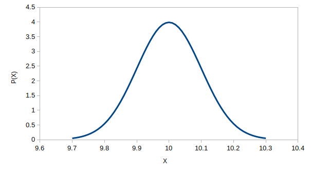
If you look at the y-axis values you'll see that the height of the curve can't possibly be giving us probabilities, because they go above 1, and by definition probabilities have to fall between 0 and 1. The area under the curve can still be 1 even though the height of the curve exceeds 1, because areas are bases multiplied by heights, and with a narrow range of about 9.7 to 10.3 along the x-axis where the height of the curve increases to its maximum the area can still be 1 when the height is greater than 1 (right? For example a rectangle with a base of 0.5 and a height of 2 has an area of 1, so we can still get an area of 1 with a height greater than 1 if the base is narrow).
Because of this, we get heights but not areas at a point, which means we get densities not probabilities at a point.
This is not a distinction we need to worry about when we use the normal distribution as a likelihood function - probability densities work just fine as likelihoods. Converting the normal probability density function to a normal likelihood function is again a simple matter of changing notation, and then completely re-thinking what the formula means, like so:
The normal likelihood function considers the data value, x, to be known (because, of course we know the data values, we measured them), and considers μ to be unknown (because we really don't know what it is). Considering σ to also be known is not very realistic, but for now we're going to do it anyway as a simplifying assumption - it lets us work with one unknown at a time, which makes the explanations simpler.
Estimating the unknown value of μ given a data value is just like the procedure used with the Poisson distribution above - the likelihood of a range of values for μ can be calculated, and the one that maximizes the likelihood is the best estimate for μ.
To illustrate how this works, this app puts a likelihood function over each data value, and then allows you to select various possible values for μ with a slider - whichever data value is selected from the pick list is shown, and the dot on the curve shows the likelihood of the mean given the currently selected data value. You'll see that the maximum likelihood given a single data value is always located at the data value (just like we saw with the Poisson likelihood function).
The likelihood calculation is also shown to the right of the curve as a formula - since 1/sqrt(2πσ2) is a constant it remains the same (0.1) regardless of the value of μ. Once a data value is selected from the list it takes the place of x in the equation and remains the same as well, so only the value of μ changes.
Give it a try with a few different data values - no matter which one you pick the maximum likelihood estimate of μ given a single data value is the data value itself.
Note that there are no images to download on this one, just isolating one curve at a time to help you understand the one below that actually estimates the mean given the entire set of data values.
It's often convenient to work on a log scale with likelihoods - we could use them to find the confidence interval limits for a proportion, above, and we'll use them again to compare models a little later in the exercise. Taking the log of the likelihood function converts it to:
If you drop down the "Choose a likelihood function" menu and select "Log likelihood" you'll see that working on a log scale changes the y-axis scaling but not the x-axis - as such, the shape of the curve changes from bell-shaped to a parabola, but the function is still symmetrical around the data value, and the x-axis location of the maximum is unchanged. Consequently, working on a log scale doesn't change the maximum likelihood estimate for μ.
Finally, since logs of decimals are negative and likelihoods will
frequently be negative numbers, we can make log likelihoods positive
values by multiplying by -1. You can see this version of the likelihood
function by selecting the "Negative log likelihood" option - this has
the effect of flipping the log likelihood vertically around the x-axis,
from concave downward to concave upward. The maximum of the likelihood
function becomes the minimum of the negative log likelihood, but the
location of the best estimate for μ remains at the known data value
regardless.
Likelihood with samples of data
This next app illustrates maximum likelihood estimation of the mean for the entire set of 15 data values from the pick list above. We can use exactly the same likelihood function we used for a single data value, but we just need to multiply the likelihoods given each single data value together - that is, the likelihood of μ given the entire data set in the drop-down menu above is:
The only change here is that we have a whole set of x values, so we
have xi as the known values (to indicate there's more than
one), and just like we did with our Poisson likelihoods for two points
we are now multiplying our likelihoods together.
On a log scale multiplication becomes addition, so the log-likelihood is:
Since we have n likelihood functions, one for each point, the likelihoods are added together n times. Adding a constant n times is the same as multiplying it by n, so both of the first two terms with nothing but constants are multiplied by n now. The squared differences between data values and the estimate for μ are summed instead of multiplied together on a log scale.
The negative log-likelihood is this log likelihood multiplied by -1.
This version of the app has every data value in the sample along the x-axis, with their likelihood functions above them. The likelihoods of the currently selected estimate for μ on the slider is indicated by a dot for each individual likelihood function in the graph on the left. The likelihood for the entire data set is the product of these individual likelihoods, and the likelihood function obtained by multiplying all 15 individual likelihood functions together is the graph on the right - the red dot on that graph indicates the likelihood of the current value for μ for the entire data set.
Let's explore the likelihood for samples of data values a little.
To get a feeling for how this is worksing slide the slider all the way to the left, to a value of 119.4 - this is the value of the smallest data point. You will see that the likelihood for the data point at 119.4 maximizes, but since 119.4 isn't close to any of the other data values the likelihood given any of the other data values will be very low.
Click on the camera icon at the top of the "Likelihood functions for each point" graph (which appears when you hover over the graph, , and download a picture of your graph to the project folder. It is VERY IMPORTANT to use the right file name so that it will show up in your Rmd file properly - this file should be called mean_119_individual.png
Now use the slider to find the value for the mean that maximizes the likelihood given the dataset - the red dot on the dataset likelihood function graph is at the peak when you find it.
Click the camera icon for each graph - call the individual curves one mean_ml_individual.png, and the dataset one mean_ml_dataset.png.
Next, to see how the likelihood function for the entire data set looks on a log scale, select "Log likelihood" from the drop-down menu below the slider (keep the mean at its maximum likelihood value). You will see that the location of the maximum didn't change, and there is still just one maximum value.
Click the camera icon just for the dataset graph (since nothing changed for the individual likelihoods) and save the file as mean_loglike_dataset.png.
Select "Negative log likelihood" from the menu to see this version of the likelihood function. Take a picture of this graph and download it as mean_negloglike_dataset.png
So far, it sure looks like the normal likelihoods are just probability densities in disguise. Before we go on, let me just point out that...
Really, likelihood functions are not probability distributions
My contention that likelihoods are not probabilities, or even probability densities, may have seemed less than convincing... if the working end of the thing is exactly the same isn't a likelihood just a probability under a different name?
We can confirm that likelihoods truly are a different thing from probabilities if we change the likelihood function. We can do this because the likelihood function still works the same if we drop constants that the parameter we're estimating doesn't depend on. If we start with the log likelihood function:
any additive constant can be dropped. Since we're treating the standard deviation as known we can treat it like a constant, so the first two terms have nothing but constants in them, and can be dropped. The log likelihood function becomes:
Dropping these terms shifts the curve up along the y-axis, but the curvature of the function and the x-axis location of the maximum aren't affected at all. You can see that with this graph of both versions of the log likelihood, with and without the constants:
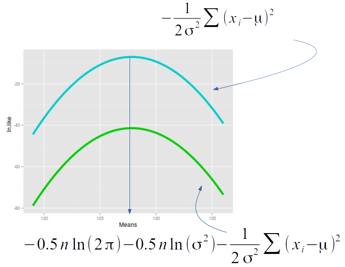
The location of the maximum and the curvature of the line are both important, but the size of the likelihood doesn't matter, so the upper curve is just as usable as a log likelihood function as the lower one that retains everything from the normal probability density function.
Removing the constants, though, makes the likelihood function no longer usable as a probability distribution - those constants are needed to make the area under the curve equal 1, and a function with an area under the curve of any number other than 1 can't be a probability distribution.
So, while likelihood functions are derived from probability distributions they really aren't probability distributions.
Before we move on, I want to demonstrate to you that while likelihood is very well suited to using numerical methods to find estimates, it can also be used to find analytical solutions as well. For example, when we are approaching our analysis from a likelihood perspective, can we still estimate μ using the sample mean, x̄?
Numerical vs. analytical solutions
In a manner of speaking, what we have been doing by moving a slider until we get a dot to the top of a curve is a primitive numerical method of estimating the mean for the data. Numerical methods work by trying out possible values until the correct one is found - our version of this process is very coarse and imprecise compared with the actual numerical analysis methods available (R uses numerical methods for all of its lm() solutions, and those estimates are very precise).
But, it's possible to use maximum likelihood to find exact, analytical solutions as well. Analytical solutions are obtained by solving an equation for an unknown, and can be mathematically proven to be the correct solution from the infinite set of possibilities.
To show you how it's possible to get analytical solutions for maximum likelihood estimates, let's get the maximum likelihood estimator for μ.
We're going to use some calculus to do this, and since calculus isn't a prerequisite for this class it may seem a little mysterious... that's okay, this is just a demonstration, but let me know if you want a little more explanation.
We start with the normal log likelihood function:
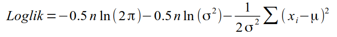
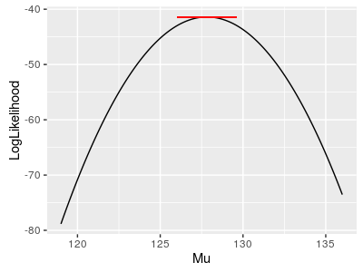
Remember, the position of the maximum log likelihood is the same as the likelihood function, so using the log likelihood doesn't change the solution, but it makes the math a little simpler.This equation gives us a curve that resembles a concave downward parabola with a single maximum. We find the maximum of a curve by finding the first derivative, which gives us a function that calculates the slope of the line tangent to the log likelihood curve at a given value for μ. The slope of the tangent line is 0 at the very top of the curve (shown in the graph to the right as the flat red line), because the curve becomes perfectly flat at its maximum value, so setting the first derivative to 0 and solving for μ gives us the estimate of μ at the maximum of the likelihood function, which will be the exact value of the maximum likelihood estimate for μ.
We actually need a partial first derivative, because we're treating σ as a constant - partial derivatives are used when there is more than one variable in an equation and you want to focus on just one of them - the notation is a little different, but otherwise we just use the polynomial rule to get the first partial derivative of the log likelihood function with respect to μ:
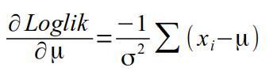
Under the polynomial rule we drop constants (the same additive constants we dropped to illustrate the difference between probability distributions and likelihood functions above). We also multiply any term raised to an exponent by the exponent, then reduce the exponent by 1 - that means we multiply the last term by 2 (which cancels with 1/2), and reduce the exponent from 2 to 1.
The first partial derivative calculates the slope of a line tangent to the log likelihood function at selected value of μ, and we know the slope is 0 where the log likelihood maximizes, so we set this partial derivative to 0:
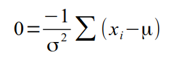
There isn't a value of σ that can possibly make the equation equal 0 - the smallest σ can be is 0, but dividing by 0 is undefined, and any other positive value of σ will make the ratio -1/σ2 a non-zero number. Given this, the only way to make the equation equal 0 is if the sum of the differences between the xi and μ equal 0. We can thus drop the -1/σ2 term:
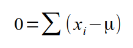
The xi will have different values, but μ is a single value, so summing (xi - μ) across all the data values entails subtracting the same mean n times - we can thus re-express this as:
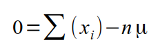
Now we have an equation we can solve for μ:
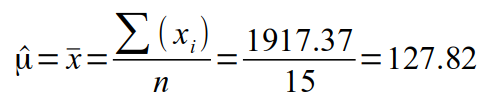
This shows that the sum of the data values divided by the sample size is the maximum likelihood estimator for the population mean. This is the old familiar arithmetic mean - it is both the least squares estimator and the maximum likelihood estimator for μ.
It turns out that, in general, when the data are normally distributed least squares and maximum likelihood methods give the same estimates. And, you'll see that the value we calculate using the arithmetic mean matches the mean we found by sliding the slider around to get a (sort of, kind of) numerical solution.
You have this same data set in the Excel file for today, so you can confirm this is the mean of the data - in your Rmd file, import the worksheet "EstimateMean" from the "likelihood_data.xlsx" Excel spreadsheet, and calculate the mean of the Data column - R's mean() function uses the usual analytical formula for the mean. You should see that it's equal to the maximum likelihood estimate you obtained (to the one decimal place we were able to estimate with the web app, at least).
Likelihoods of linear models given the data
The first example of estimating the mean of a sample of data was (relatively) easy to understand, but doesn't really do much useful work for us. We can take the same approach, however, to finding a linear model that has the highest likelihood given the data, and doing so will get maximum likelihood estimates for the slope (β) and intercept (α) in the process. From there the world will be our oyster.
Finding the straight line that maximizes the likelihood given the data seems like it would be more complicated than finding a mean, since we have to estimate both a slope and an intercept to estimate the lines. But, it doesn't actually complicate things all that much - the only thing we need to do differently is to replace μ in the likelihood function with the predicted value of the regression model. For example, the log likelihood function for a GLM looks like this:
The unknown parameters we are estimating are on the left side of the vertical line (α, β), and the known data values (yi) and standard deviation of the residuals (σ) are on the right side of the vertical line (remember that the data values are actually known, but we're somewhat disingenuously treating σ as though it's known to keep this a little simpler).
The only difference from the log likelihood function we used before is that we've replaced ŷ for μ. We're using ŷ now because it represents the mean of the y variable predicted by the line at a given value of x. Differences between yi data values and ŷ predicted values are residuals, so we calculate the likelihood of the model with the parameters α, β that maximizing the likelihood of the line that they define given the sizes of the residuals around the line.
This is important: we are estimating the values of α and β but the likelihood function is expressed in terms of the residuals around the model. This is enough for us to get maximum likelihood estimates for α and β, and to get a log-likelihood for the model as a whole.
Although the likelihood function is nearly the same as the one we used to estimate the mean of a data set, the app below looks quite different. The graph on the left shows the data points as a scatterplot of y and x values (a response and a predictor variable of some kind) on the base of a 3D graph, but the likelihood functions for each individual data value are plotted as a third dimension, along the z-axis. The graph on the right is the likelihood function (z axis) for ranges of possible values for the slope (x axis of the 3D graph) and intercept (y axis of the 3D graph).
You can change the slope and intercept values with the controls in the
regression equation, and as you pick better ones the red dot will climb
up the likelihood surface in the graph to the right. Picking values for
the slope and intercept that put the line through the data makes the
individual likelihoods higher, collectively, and the likelihood surface
on the right shows how the likelihood for a model with the various
possible values for slope and intercept. When you find the model with
the highest likelihood, the slope and intercept values are the ML
estimates for the parameters.
Let's explore the likelihood of this first linear model.
To get started, let's make sure you're clear about what the graph
on the left shows. Rotate the graph so that it looks like a typical 2d graph 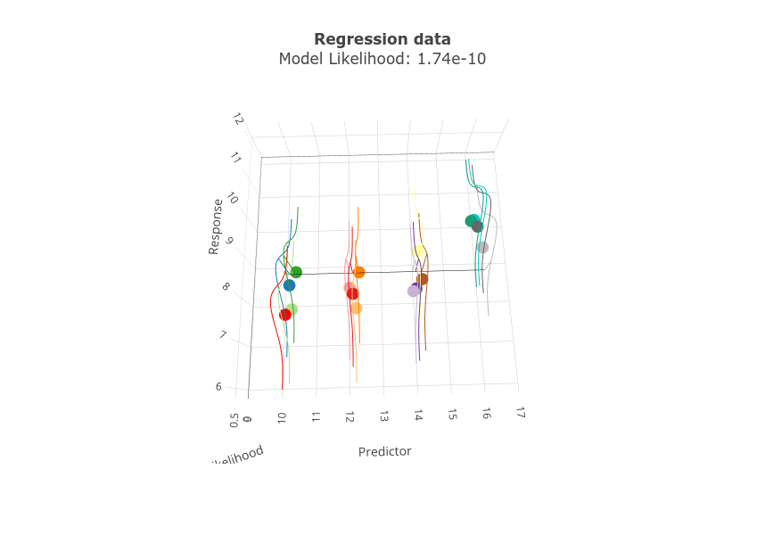
Rotate the graph back closer to where it started so you can see the normal likelihood curves from the side, and you'll see vertical lines that show the height on the likelihood curves - their lengths are likelihoods of the line given the individual data values. Just like with the estimation of the mean, above, each of these individual likelihoods is multiplied together to give you the dataset's likelihood.
Continue to watch the individual likelihoods for a moment as you change the slope.
If you start increasing the slope (by clicking the up-arrow in the box representing the slope) you'll see the line starts to tilt upward. The intercept is still at the mean for the data, so the line pivots at the intercept value of 8.82, and quickly starts to leave the data. As you do that the likelihood of the model gets smaller, because the line starts to move away from the data values, where all of the individual likelihood functions are very low.
Once the slope has tilted the line so much that it's above all the data you can bring it down into the data again by reducing the intercept - this will cause the line to move down the y-axis without changing the tilt. As you move it into the data you'll see the model likelihood starts to increase again because the line is passing under the taller parts of the individual likelihoods.
Turn your attention to the "Likelihood function" graph to the right. This graph gives the likelihood of combinations of slope and intercept that you could select. If you move your mouse over the surface you'll see a popup that gives the values for slope, intercept, and likelihood at that point on the surface.
If you then grab and rotate the graph you'll see that the likelihood function is very narrow, like a shark's fin - this is because the slope and intercept work together to place the line through the data, and the likelihood for any value of the slope depends on the value selected for the intercept. For the model to have a high likelihood, particular combinations of slope and intercept have to be selected that make the line go through the data properly.
You can switch to a log likelihood surface by selecting that option from the drop-down menu above the likelihood function graph. You'll see that it's shaped differently, but the maximum is in the same location (it's harder to find because it's pretty flat along the top of the surface the way I plotted it). Just like before, though, there is just one highest point, so there is a single best slope and intercept combination for this model.
Switching to a negative log likelihood flips the log likelihood over, and the minimum of the negative log likelihood is the maximum likelihood for the model.
Try now to find the very top of the 3D surface - as you hover over the peak you'll see that the coefficients that maximize the likelihood of the model are about 0.27 for the slope and about 5.3 for the intercept.
Now that you know roughly what the maximum likelihood estimates will be for the slope and intercept, enter them into the boxes in the regression equation. When you do this you'll see that the regression line gets much thicker and turns bright red to indicate that you're close to the best value, and the dot on the likelihood surface gets close to the peak. The actual maximum likelihood possible for this straight line is 1.29 x 10-5, so fiddle with the slope and intercept to get as close to this model likelihood as you can.
When you have the best slope and intercept you can get click on the camera icon and download the graph as "regression_ml.png".
You'll see that the best straight line is perhaps still not a very good representation of the data - a straight line doesn't model the non-linear dip in the data at around a predictor value of 14, and it over-estimates at that point pretty badly. We might be able to do better with a line that has a quadratic effect included. We'll try that next, and then we'll use the likelihoods of this model and the quadratic model to test whether adding the quadratic has a statistically significant improvement in fit.
Hypothesis testing with likelihood - comparing two nested models with a likelihood ratio test
We are now going to do another maximum likelihood fit of a line to the same data, but this time we'll allow the model to have a quadratic curve.
The app above has a data graph to the left and a likelihood function graph to the right, just like the other examples. The data graph is identical (for the moment) to the linear regression data graph, except that this model has a quadratic term. Initially the coefficients for the quadratic term and the linear term are both set to 0 here, so the line is flat. But, as we change them to non-zero numbers we will produce a line with a curve in it to account for the curvature in the relationship between y and x.
Because the model likelihood now depends on three different parameters it was necessary to put one on each axis of the 3D graph of the likelihood. Since that doesn't leave an axis to plot likelihood against, this version has a single point whose 3D coordinate is the quadratic, linear, and intercept coefficient values, but whose size and color indicate the model likelihood (sorry, no trippy 3D surface for this one). Right now with a slope of 0, intercept of 8.75, and quad term of 0 the point is small, black, and in the lower right corner of the graph. As you get your model closer to the maximum likelihood possible for a quadratic line the dot will move toward the center of the graph, and will get bigger and redder.
We need to find the model that maximizes the likelihood. It's a little tricky to find the best set of values by fiddling with the coefficients this time, because the line is very sensitive to small changes in the quadratic coefficient (and pretty sensitive to the slope, too). To make it a little less frustrating I'll give you the two difficult ones, and you can find the easier one yourself: enter 0.06827 for the quadratic term, and -1.529 for the slope. Now all you need to do is adjust the intercept to get the line to its ML position.
Make the log-likelihood as big as you can (the line and dot get bigger and redder the closer you get to it)
Once you've found the ML value, you'll need the log-likelihood. I don't give you the choice of switching between likelihood, log likelihood, and negative log likelihood in this version of the app because it wouldn't really change the appearance of the dot on the likelihood function graph. But, if you hover over the point on the graph you'll see that these values are all reported for the currently selected slope, intercept, and quad term.
Once you find the ML model click on the camera icon for the data graph on the left and download it to your project folder - call it regression_quad_ml.png.
We now have two different models, and the quad model at least appears to fit the data better than the straight line. According to Edwards, 1992:
“Within the framework of a statistical model, a particular set of data supports one statistical hypothesis better than another if the likelihood of the first hypothesis is greater than the likelihood of the second hypothesis”
We can define a measure of the difference in likelihood of two models called support - the degree of support for one model compared to another is calculated as:
That is, support is the log of the ratio of their model likelihoods. The log of a ratio is equal to the difference between the log of the numerator and the log of the denominator, so we can calculate the support from our log-likelihoods (this is why working with log-likelihoods is useful, by the way).
Since we are using the same data set for both models, and the models are nested we can test for a difference in support with a likelihood ratio test. Nested models are ones in which all the parameters for the simpler model are also found in the more complex model - that is, the simpler model has a subset of the parameters in the more complex model. This is what we have - the linear regression has everything the quadratic model has except for the quadratic term, so the linear regression is nested within the quadratic regression.
In general, we want a support ratio for the simpler (i.e. reduced) model compared to the more complicated one (i.e. full model). We would thus use the linear regression model as H1, and the quadratic regression model as H2.
The likelihood ratio test uses the G statistic, which is calculated by multiplying the support ratio by -2, like so:
G = -2 [ln(L(linear)) - ln(L(quadratic))]
The likelihood of the complex model will never be lower than the simpler one, so the difference will be negative, and multiplying by -2 makes the G statistic positive.
This G statistic follows the Chi-square distribution, with the difference in model degrees of freedom for the two models used as the degrees of freedom for the likelihood ratio test - there is only one predictor different between them, so the difference in df is also 1. To test for a difference in support for the linear and quadratic models we compare our G value to a Chi-square distribution with 1 degrees of freedom.
The calculations are done here - enter the log likelihood for your ML regression model (simpler), and your ML quadratic regression (more complex) in the entry boxes below (include the minus sign!). The p-value is calculated when you enter the values.
|
First model log likelihood: |
(the simpler model) |
|
|
Second model log likelihood: |
(the more complex model) |
|
|
Degrees of freedom: |
(difference in df for the two models) |
|
|
G statistic = |
|
(-2 (log likelihood of first model - log likelihood of second model)) |
|
p-value = |
|
|
The more complex model will always fit the data at least a little better when the models are nested, but if p is less than 0.05 we can conclude that adding the quadratic term significant improved model fit, and thus the support for the model with a quadratic term is significantly better than the model without one. Equivalently, you can think of this as showing that dropping the quadratic term leads to a significant reduction in support for the model.
Is the best-supported hypothesis any good at all?
The likelihood ratio test was very different from the null hypothesis tests we've been doing all semester, in that it compared two different hypotheses about the nature of the relationship between y and x, neither of which was a null hypothesis of no relationship at all. There is a null hypothesis for the likelihood ratio test, but it is that support ratio is equal to 0 - this happens when the likelihoods are identical, which would only occur if the quadratic coefficient was equal to 0 and thus had no effect on the predicted values for the model.
This could cause us a problem, in that the hypothesis of no relationship between y and x is an important one to test. We don't want to have to give up the null hypothesis of independence between y and x as we move into comparisons of models as our inferential approach.
To keep the usual null hypothesis in the mix we just need a model for it. The model for the null hypothesis then just becomes one of several models we need to consider, and becomes one of several hypotheses we're considering, rather than being the only one we actually test.
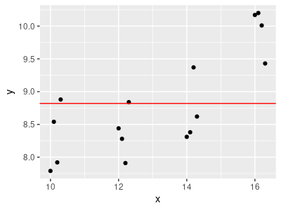
Representing the null hypothesis as a glm turns out to be pretty simple - we just need to use an intercept only model. A model that only has an intercept hypothesizes no relationship between y and x at all - or, if you prefer, it hypothesizes that the relationship is a flat line with a slope of 0 and an intercept at ȳ, like the graph on the left (remember that weird question I asked you in the review exercise about what the intercept would be if the null was true and the slope was equal to 0? Now it's actually relevant!).
We can calculate the likelihood of the intercept-only model given the data by going back up to the linear regression app and setting the intercept to the mean of the Y data (8.82), and the slope to 0. If you then select log likelihood from the drop-down menu you will get the log-likelihood of the intercept-only model.
Once you have it, go back to the G test calculator, and enter the log likelihood of the intercept only model as the simpler model, and the log likelihood of the linear regression as the more complex model. Since the only difference between them is the slope of the linear regression there is still only 1 DF for the test. You should see that the linear regression fits statistically significantly better than a flat line.
Okay, that was fun - but Doc Kristan's Magic Apps aren't how you do real work. Now we're going to do this set of regressions in R to see how this is really done.
Using R for likelihood ratio testing
Likelihood ratio tests comparing models are simple to do in R, using our familiar lm() model fitting.
1. Import the Regression sheet from likelihood_data.xlsx into an object called regression.
2. Fit a linear regression of y as the response against x as the predictor, and store the output in linear.lm. To see the coefficients put the name of the object, linear.lm, in the next row after the model is fitted - you should see they are very similar to what you got with the apps (these are of course better estimates, the apps above are pretty crude, but they should be close). Do this step in chunk linear.regression of your Rmd file, and put the output into an object called linear.lm.
3. Get the log likelihood for the linear.lm model (in chunk linear.regression.loglike of your Rmd file);
logLik(linear.lm)
You should get a value of -11.24156 with 3 degrees of freedom. This should be close to the value you got in the app. Note that the linear model has 3 degrees of freedom, because it estimated the slope, the intercept, and the standard deviation of the residuals. I omitted the estimate of the standard deviation for simplicity, and you can see now that it didn't have much effect on the result.
4. Now fit the model with the quadratic term. The syntax is a little different, because R gets confused if you use the same predictor twice in a model formula - we need to use the identity function, I(), to get it to actually use the quadratic predictor. Put this in the quad.regression chunk of your Rmd file:
lm(y ~ x + I(x^2), data = regression) -> quad.lm
quad.lm
The coefficients should again be fairly close matches with what you got from the app.
You can get the log likelihood for this model in chunk quad.regression.loglike of your Rmd file. R's log likelihood should be close to what we got with the app.
This model has 5 df - one more than the linear regression model because of the quadratic term.
5. Fit the intercept only model in chunk intercept.only of your Rmd file:
lm(y ~ 1, data = regression) -> intercept.lm
intercept.lm
Using only a 1 as a predictor with no variables fits an intercept-only model. You'll see that only an intercept coefficient is reported, and it is equal to the mean of the y data.
Get the log likelihood for this intercept only model in chunk int.only.log.likelihood. The log likelihood of the intercept-only model is quite a bit smaller than the other two - having no predictors in the model seems to lead to substantially lower likelihood.
6. Now to do the likelihood ratio tests. There is an lrtest() function in the lmtest library that does the likelihood ratio test and gives output that matches what we saw in the app, above. To use it, in chunk likelihood.ratio.tests, enter:
library(lmtest)
lrtest(intercept.lm, linear.lm, quad.lm)
You'll see you get the following output:
Likelihood ratio test
Model 1: y ~ 1
Model 2: y ~ x
Model 3: y ~ x + I(x^2)
#Df LogLik Df Chisq
Pr(>Chisq)
1 2
-18.5567
2 3 -11.2416 1 14.6303 0.0001308 ***
3 4 -8.1878 1 6.1076 0.0134604
*
---
Signif. codes: 0 ‘***’ 0.001 ‘**’ 0.01 ‘*’ 0.05 ‘.’ 0.1 ‘ ’ 1
Each row is a model, in the order you entered them into the lrtest() command. Models are compared to the model in the previous row, so the second row compares the linear regression to the intercept only model, and the third row compares the quadratic regression to the linear regression. We get significantly better fits by using x as a predictor than with no predictor at all, and by including a quadratic term over only using a linear regression. The results are very similar to what we got with the app, above.
You can also use the anova() command to get a similar test. If you use anova() R calculates the residual sums of squares for each model and then uses those to calculate an F test. To see how the base R function output looks, enter (in the same chunk):
anova(intercept.lm, linear.lm, quad.lm)
and you'll see:
Analysis of Variance Table
Model 1: y ~ 1
Model 2: y ~ x
Model 3: y ~ x + I(x^2)
Res.Df RSS Df Sum of
Sq F
Pr(>F)
1 15
9.5286
2 14 3.8187 1 5.7100
28.4736 0.0001352 ***
3 13 2.6070 1
1.2117 6.0425 0.0287690 *
---
Signif. codes: 0 ‘***’ 0.001 ‘**’ 0.01 ‘*’ 0.05 ‘.’ 0.1 ‘ ’ 1
The results are very similar, but it's not actually a likelihood ratio test like what we get with the lrtest() function.
So, as you can see, R has good support for fitting models and comparing them. We'll make good use of this as we learn to use model-based analysis to compare hypotheses that don't include nested sets of predictors.
That's it! Knit and upload your Word document.